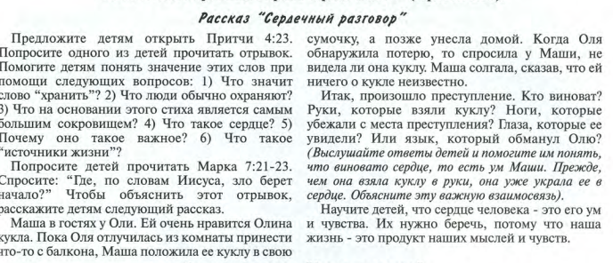

«Блаженны чистые сердцем, ибо они узрят Бога»
• «Больше всего хранимого
храни сердце твоё, потому что из него источники жизни.» Притч 4:23

(«История про куклу» для младших)
• Иисус говорит, что счастье – это иметь чистое сердце.
Что это значит чистое сердце?
“Истинно говорю вам, если не обратитесь и не будете
как дети, не войдете в Царство Небесное” Мф, 18:3
Быть, как маленькие дети – это иметь чистое сердце, чистые мотивы, быть
искренними.
«Ты испытал сердце моё,(посетил меня ночью, искусил меня и ничего не нашёл;) от мыслей моих не
отступают уста мои.» Пс 16:3
Это когда твои мысли не отступают от твоих слов и поступков. Ты не
обманываешь, не таишь злобы, не имеешь скрытого тайного
умысла кого-то задеть или обидеть.
Кратко библейский рассказ о том, как Каин затаил в сердце обиду и злость на
брата Авеля: «И сказал Господь Каину: почему ты огорчился? и отчего поникло
лицо твоё? если делаешь доброе, то не поднимаешь ли лица? а если не делаешь
доброго, то у дверей грех лежит; он влечёт тебя к себе, но ты господствуй
над ним.» Бытие 4 (что когда ты что-то замыслил – это отражается во всех твоих чувствах/на
лице, и проходит какое то время от того, что ты
задумал до поступка. И Господь к Каину обратился, чтобы он обратил внимание на
то, что в его сердце. И «у дверей лежит грех» - это образ входа/дверей в твоем
сердце, в котором ты обнаруживаешь греховные мысли, и ты им можешь противиться,
не впустив вовнутрь.)
• Каксердцесвязаносглазами?КакипочемучистыесердцемувидятБога? (Можно сделать наглядность по возрасту, сердечко с глазами например.)
Слово Божье учит, что сердце умеет видеть. Сердце, о котором говорит Иисус, –
это не физический орган, это центральная часть духа
человека, из него исходят желания и намерения/мотивы, мысли, которые вызывают
определенную реакцию, чувства
нашей души. (Часто люди когда говорят люблю от всего сердца»,
подразумевают «от всей души».)
«Светильник для тела есть око. Итак, если око твоё
будет чисто, то всё тело твоё будет светло; если же око твоё будет худо, то
всё тело твоё будет темно.» Мф 6:22-23
Представим, что сердце - это стекло и мы смотрим через
него.(показать детям наглядно) «Чистое око» - это как
чистое стекло, мы смотрим на мир и видим ясно, без искажений. Т.е. через
чистое сердце - не лукавое, не завистливое, не похотливое, не злое, мы видим
вокруг ясно, как задумал всё Бог. Т.е.чистые
сердцем узрят Бога – это и значит видеть Бога во всем и во всех, видеть через
Него, видеть Его глазами, КАК видит Бог.
Глаза сердца – это то, КАК ты видишь, не ЧТО ты
видишь, а КАК!
А это возможно/доступно только чистым сердцем!
Опыт-игра со стеклом испачканным,или очками, где надо
догадаться кто из членов команды стоит перед тобой и
что он держит в руке (круглое:мяч/яблоко, прямоугольное:телефон/блокнот, похожие предметы).
Для старших можно рассказать историю про грязное окно и стекло.
Вывод: через грязное стекло ты видишь искаженно и не можешь оценить ситуацию.
Привести жизненную историю для старших, когда мы не понимаем мотивов поступка
другого человека.
• Какпонятьчтовмоемсердце?
«ибо где сокровище ваше, там будет и
сердце ваше.» Мф 6:21
1.
Мы можем сами заглянуть в своё сердце, что для меня
самое важное в жизни? Кем я хочу быть? Почему? Какие качества я ценю в
человеке? Что из этого есть во мне? Что мне не нравится, что есть в моем
сердце/моих мыслях?
2.
Более ясный взгляд на состояние сердца человека может дать
только Господь, потому что Он смотрит намного глубже, чем можем мы сами. «Сердцеведец Бог дал им свидетельство, даровав им Духа
Святого...» Деян15:8 (младшим сказать 1-ую часть стиха, что Бог Сердцевидец, а старшим сказать, что у нас есть Д.Святой для мониторинга сердца 😊).
Поэтому в молитве Бог может нам показать
состояние нашего сердца, какие были в нем мотивы, когда мы совершили тот или иной поступок, что нас беспокоит, от чего мы потеряли радость
и мир, стали несчастными. И если мы прислушаемся и послушаем Бога, попросим Его
нам помочь, очистить сердце, то Он это сделает!
3.
Чтение и изучение
Библии также помогает нам понять, что в сердце исказилось/испачкалось, что мы
уже видим ситуацию/людей совсем не так, как видит и
учит Господь в Слове. Бог сравнивает Слово, с водой,
которая нас омывает изнутри. Таким образом, когда мы погружаемся в Слово
(пребываем/размышляем о прочитанном) наше сердце, подобно испачканному стеклу,
прочищается/омывается, и мы начинаем видеть так, как видит Бог, видеть Бога
вокруг и в людях! (завершить всё примером очищения стекла)